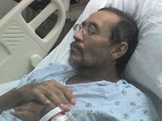
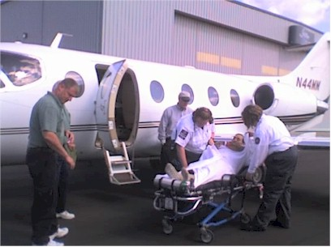
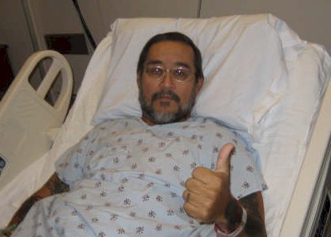
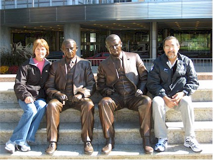
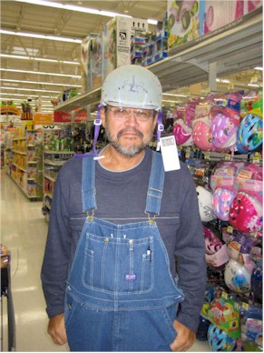
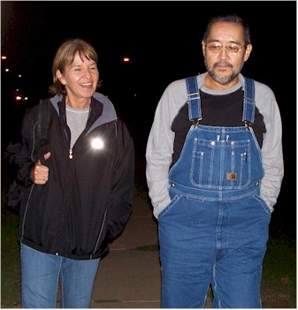
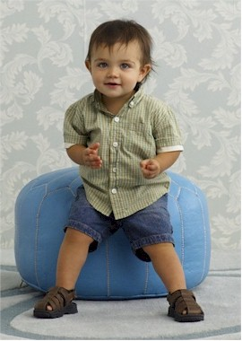
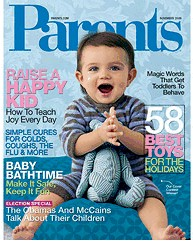

October 2008
|
Some of you may remember the story of my Dad's miracle from back in 2002. I still think of it in amazement at least once a month. As if this was not blessing enough, our family got to witness another miracle this year in the restoration of my Uncle Joe. My Mom�s younger brother Joe had liver failure earlier this year and was
dying at age 52. They were told he didn�t qualify for a transplant
and so they were basically trying to keep him comfortable while he died.
Joe got sicker and sicker to the point where even his kidneys were
starting to fail. Then he got a new doctor who OK�d the
transplant, but by then he was not healthy enough to make the trip.
They put him on dialysis and worked with him for awhile. He
eventually got healthy enough to make the trip. This was a small miracle
in itself because he had been so terribly sick there for
awhile. He
used to be a truck driver for Wal-Mart and I am so pleased with how
Wal-Mart treated him. They sent a private jet and two medical
assistants to accompany him to the Mayo Clinic in Joe made it to the Mayo Clinic and was on the waiting list for a new liver. Many people in the transplant ward have been waiting for four months or more. Incredibly, he got his new liver within the first week he was there. The Mayo Clinic has also gone over and above all expectations with the great care he has received there. He is now recovering very nicely and is SO MUCH healthier than we ever imagined. Seeing him walking around, with color in his face and not tormented by pain is truly a miracle when you think that only a few weeks ago he was saying his goodbyes to loved ones. For various reasons, our family has not been very close to Joe's family over the years. One of the great blessings that came out of all this was the healing and restoring of relationships between Mom and her brother who she loves so much. It was really wonderful to see them getting close again and having fun again just like old times. Already
Joe and his family have seen many miracles over the past month. In
the midst of all this, Joe�s grandson Trevor won a contest out of 85,000
kids to be on the cover of Parents magazine. What a bonus - when God
decides to bless someone, he doesn�t go half-way! |
|
 |
 |
| Here he is when he was really sick |
Here is a shot of him being loaded on the plane for the Mayo Clinic in Rochester, MN. |
 |
 |
| Just a couple days after the transplant, he's already looking great. |
Here Mom takes him out for some adventures around town, like getting their picture with statues of the founders of the Mayo Clinic. |
 |
 |
| Mom was always a little bossy with him, here she makes him pick out a helmet to wear while he's riding those carts in Wal-Mart. (Not really!) |
Here they are out for a walk on Mom's last night up there.
|
 |
 |
| This is a picture of Joe's grandson Trevor taken during the photo shoot in New York when he was in a group of 5 finalists. |
Here's Trevor on the cover - the whole family is so excited! |